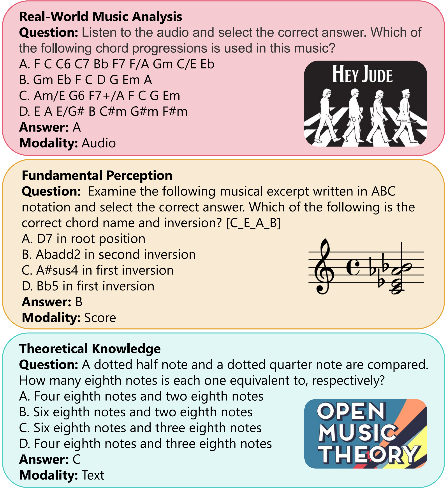

Supplementary Material for
HY-MAST: Probing the Fragile Foundations of Music Understanding in Multimodal LLMs
We sincerely appreciate your careful reading and valuable time. Best wishes for 2027!

S1. Benchmark Construction Details
This supplement preserves the extended motivation, benchmark construction, and evaluation condensed in the ICASSP 2027 main paper. References are numbered independently in the main paper and this supplement. Supplementary section, figure, and table numbers carry the prefix S.
For multimodal LLM evaluation framework, HY-MAST provides audio, symbolic sheet, and theory articles. Audio music is derived from two sources: automatically synthesized standard music samples and authentic human-composed works.
S1.1. Curated music corpus for Real-World music analysis
This component assesses comprehensive understanding within real, complete, and complex works. Its tasks range from basic perception, such as tempo estimation, to integrated analysis, such as genre identification.
- Popular music: The entire Billboard Greatest of All Time Hot 100 Songs chart is included. This historically aggregated chart provides the popular-music evaluation context. The original source is https://www.billboard.com/charts/greatest-hot-100-singles/.
- Art music: We manually select 100 representative MusicNet works [1], considering genre, period, and composer, to assess complex musical structure.
- World music: We select 100 works from four regional collections associated with CompMusic [2]: Arab-Andalusian music [3], the Jingju a cappella singing dataset [4], Indian Carnatic and Hindustani music in Saraga [5], and Turkish şarkı vocal music [6].
S1.2. Fundamental perception generation
The synthetic component tests core competencies under controlled conditions. Synthetic items can be generated in effectively unlimited numbers through two complementary methods.
Rule-based generation — Online Automatic synthesis
Fragments target isolated musical elements: pitch in G3–G5, intervals within one octave, chords with at most four notes, rhythmic patterns, and scale-based tonality. A controlled, seed-driven pipeline generates each audio stimulus and corresponding ABC notation according to formal rules. Most pitch-related tasks present A4 before the target stimulus to mimic reference-based human testing conditions.
Due to the lack of a well-structured music synthesis system in previous works, HY-MAST incorporates a complete set of tools for on-line synthesis of standard samples. Guided by the rigorous norms of musicological theory, it can automatically synthesize accurate standard music samples (No AI) in accordance with specified instructions. Synthesized files are provided in WAV, MIDI, ABC and XML formats, which can be applied to LLM benchmark construction, music generation samples, and art examinations.
- Automatic fundamental perception questions generation tools:
Code_Fragments/Auto_Benchmark_Test_for_LLM_main.py - Automatic synthesis tools:
Code_Fragments/Algorithm_for_Music_Synthesize.py
Model-based generation — AI Melody Generation and Automatic Audio Rendering
Meter identification and melody transcription require coherent melodic phrases; isolated rule-based fragments lack the natural flow needed for these tasks. For the questions of Melody Transcription and Time Signature Recognition tasks, the target melody to be recognized is generated by an LM. We train a lightweight Transformer decoder on the IrishMAN dataset [7] to generate plausible short monophonic melodies in ABC notation. This component therefore contains both isolated-element and phrase-level items, not only single notes or chords.
The LM model first produces content in ABC notation, which is then automatically converted to MIDI and rendered into WAV format by fluidsynth, before being finally supplied to the question system. The pipeline for LM-generated melodies is also controlled by the random seed to ensure reproducibility.
Batch generated abc to wav tools: Code_Fragments/lm_gen_abc_to_audio.py
S1.3. Theoretical knowledge construction
This text-only examination contains 119 multiple-choice questions about formal music theory. Construction follows three stages:
- A domain expert identifies the core concepts and extracts explanatory text from Open Music Theory [8].
- DeepSeek-R1 [9] uses the concept–text pairs to generate question stems, correct answers, and plausible distractors.
- The expert reviews and refines the entire set for correctness, clarity, and appropriateness.
Distractors are prompted to mirror the grammatical structure and stylistic register of the correct answer while containing a definite factual error. This design seeks to reduce guessing from superficial language patterns and make theoretical knowledge necessary for identifying the correct statement.
S2. Evaluation Protocol
S2.1. Prompt and scoring
All evaluations use zero-shot, four-option multiple choice. The standardized instruction prepended to every model is:
Please answer the following multiple-choice question. You must choose the correct option letter (A, B, C, or D) and provide only the letter as your response. Question:
Only the correct single-letter answer receives credit. Any non-conforming response is counted as incorrect. This strict protocol measures performance under a shared output constraint; transcription tasks are evaluated through candidate selection rather than unrestricted sequence generation.
S2.2. Seed-controlled instantiation
A random seed and configurable item counts instantiate an evaluation set. Researchers can change seeds or increase item counts to investigate performance anomalies or suspected overfitting. The default experiment uses the configuration described below. Seed control differs by component:
- Real-world analysis: the query work and distractors are sampled from the same sub-corpus. Distractors are valid labels within that context, reducing label-set exclusion shortcuts [10].
- Fundamental perception: all musical materials and candidate options are generated algorithmically. The pipeline first creates four equally valid candidates, then randomly selects the target. The other candidates are incorrect only relative to the stimulus.
- Theoretical knowledge: the 119 stems and their correct answers and distractors remain fixed. The seed changes the presentation order of the four options, preventing reliance on stable answer positions, not memorization of question content.
Three-dimensional random chain
To ensure that the benchmark system can be controlled by the user-specified random seed, we have also developed a comprehensive set of random selection and random number generation tools. We adopt the "Three-dimensional random chain" method to generate a local random number matrix for all sub-questions, thereby constraining the content of each sub-question and the generation process of its associated music.
The usage of this function is as follows:
seeds_chain_dict, Seed_Chain_Matrix = pseudorandom_tools.generate_3d_random_chain(input_seed, [number_of_questions_type, number_of_each_questions, num_process])Here, the matrix Seed_Chain_Matrix represents the local random number for the k-th category, l-th sub-question, and p-th process (batch). Given an input seed (e.g., 0), the random number at the specific position remains fixed regardless of how the total number of categories, sub-questions, and processes changes, as shown in the figure:

S3. Complete Radar Values
Table S1 and Table S2 preserve all values plotted in the two original radar figures. The main paper redraws those curves with compact axis labels and places dense numerical annotations here instead of superimposing them on intersecting curves. Axis order is unchanged. Human percentages retain the one-decimal values encoded in the original curves; model accuracies are integer percentages. Reported aggregate means and standard deviations remain unchanged in the main figures, including their original rounding.
On smaller screens, scroll each table horizontally to view all columns.
| Task | Am. | St. | Ex. | GPT | Kimi | MiD | MF | Qwen | Gemini |
|---|---|---|---|---|---|---|---|---|---|
| Pitch (A) | 66.7 | 71.4 | 100.0 | 30 | 22 | 24 | 28 | 96 | 99 |
| Interval (A) | 58.3 | 71.4 | 90.5 | 29 | 22 | 22 | 20 | 33 | 51 |
| Chord (A) | 50.0 | 57.1 | 71.4 | 21 | 19 | 15 | 38 | 47 | 44 |
| Tonality (A) | 70.8 | 85.7 | 95.2 | 28 | 25 | 31 | 30 | 67 | 87 |
| Rhythm (A) | 50.0 | 57.1 | 90.5 | 8 | 36 | 36 | 29 | 34 | 34 |
| Meter (A) | 37.5 | 57.1 | 66.7 | 23 | 21 | 20 | 26 | 27 | 25 |
| Melody (A) | 29.2 | 42.9 | 95.2 | 29 | 17 | 26 | 29 | 43 | 47 |
| Interval (S) | 87.5 | 71.4 | 95.2 | 36 | 32 | 25 | 29 | 81 | 100 |
| Chord (S) | 50.0 | 52.4 | 95.2 | 11 | 32 | 22 | 34 | 78 | 100 |
| Tonality (S) | 58.3 | 47.6 | 90.5 | 24 | 32 | 50 | 39 | 93 | 100 |
| Meter (S) | 25.0 | 47.6 | 90.5 | 1 | 20 | 22 | 23 | 31 | 64 |
| Music theory (T) | 45.8 | 81.0 | 71.4 | 73 | 69 | 66 | 68 | 93 | 95 |
| Task | GPT | Kimi | MiD | MF | Qwen | Gemini |
|---|---|---|---|---|---|---|
| Genre (A) | 57 | 45 | 39 | 45 | 73 | 60 |
| Instrument (A) | 45 | 27 | 23 | 49 | 80 | 58 |
| Tempo (A) | 25 | 21 | 26 | 40 | 58 | 37 |
| Meter (A) | 13 | 17 | 36 | 46 | 59 | 54 |
| Tonality (A) | 25 | 17 | 18 | 45 | 44 | 50 |
| Harmonic (A) | 30 | 22 | 24 | 59 | 65 | 76 |
| Melody (A) | 21 | 20 | 26 | 24 | 40 | 29 |
| Lyric (A) | 97 | 88 | 27 | 94 | 100 | 99 |
| Work (A) | 67 | 56 | 39 | 75 | 86 | 84 |
| Genre (S) | 26 | 19 | 30 | 25 | 26 | 52 |
| Meter (S) | 12 | 18 | 43 | 56 | 66 | 68 |
| Tonality (S) | 31 | 33 | 33 | 26 | 46 | 56 |
| Work (S) | 39 | 18 | 28 | 18 | 38 | 52 |
Open Source
The folder online_sys_music_files stores the audio files required by this page. The folder Code_Fragments provides partial code snippets. Should this paper be accepted for publication, all additional resources will be released, such as real-music items. Thank you for your time and attention.
Bibliography source: ICASSP2027_refs.bib. The synthesis and melody-rendering code links are included in S1.2; the random-chain usage and illustration are included in S2.2.
Test demonstration for HY-MAST
Cases For Fundamental Perception and Theoretical Knowledge Evaluation. Below are whole 11 task categories of fundamental perception, as well as the theoretical knowledge task, each category presents 2 items. All the music content and questions are generated based on the random seed "0". This random seed enables question reproduction. Identical seed values produce consistent music and questions, ensuring benchmark fairness and reproducible LLM evaluation outcomes.
References
- J. Thickstun, Z. Harchaoui, and S. M. Kakade, “Learning features of music from scratch,” in Proc. ICLR, 2017.
- X. Serra, “A multicultural approach in music information research,” in Proc. ISMIR, pp. 151–156, 2011.
- R. Caro Repetto, N. Pretto, A. Chaachoo, B. Bozkurt, and X. Serra, “An open corpus for the computational research of Arab-Andalusian music,” in Proc. DLfM, pp. 78–86, 2018.
- R. Gong, R. Caro Repetto, and X. Serra, “Creating an a cappella singing audio dataset for automatic Jingju singing evaluation research,” in Proc. DLfM, pp. 37–40, 2017.
- A. Srinivasamurthy, S. Gulati, R. Caro Repetto, and X. Serra, “Saraga: Open datasets for research on Indian art music,” Empirical Musicology Review, vol. 16, no. 1, pp. 85–98, 2021.
- G. B. Dzhambazov, S. Sentürk, and X. Serra, “Automatic lyrics-to-audio alignment in classical Turkish music,” Computer Engineering Department, Bogaziçi University, 2014.
- S. Wu, X. Li, F. Yu, and M. Sun, “TunesFormer: Forming Irish tunes with control codes by bar patching,” in Proc. HCMIR, 2023.
- M. Gotham, K. Gullings, C. Hamm, et al., “Open Music Theory, version 2,” Online open-access textbook, 2021. https://viva.pressbooks.pub/openmusictheorycopy/.
- D. Guo, D. Yang, H. Zhang, et al., “DeepSeek-R1 incentivizes reasoning in LLMs through reinforcement learning,” Nature, vol. 645, no. 8081, pp. 633–638, 2025. DOI: 10.1038/s41586-025-09422-z. Article.
- Y. Zang, S. O'Brien, T. Berg-Kirkpatrick, J. J. McAuley, and Z. Novack, “Are you really listening? Boosting perceptual awareness in music-QA benchmarks,” in Proc. ISMIR, pp. 247–261, 2025.